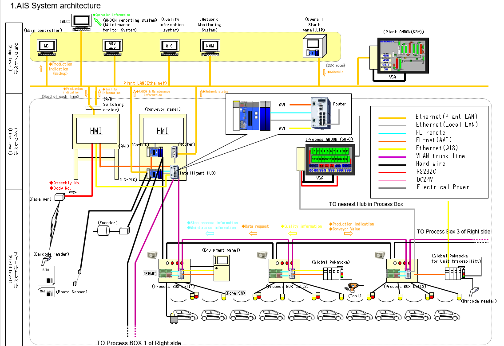
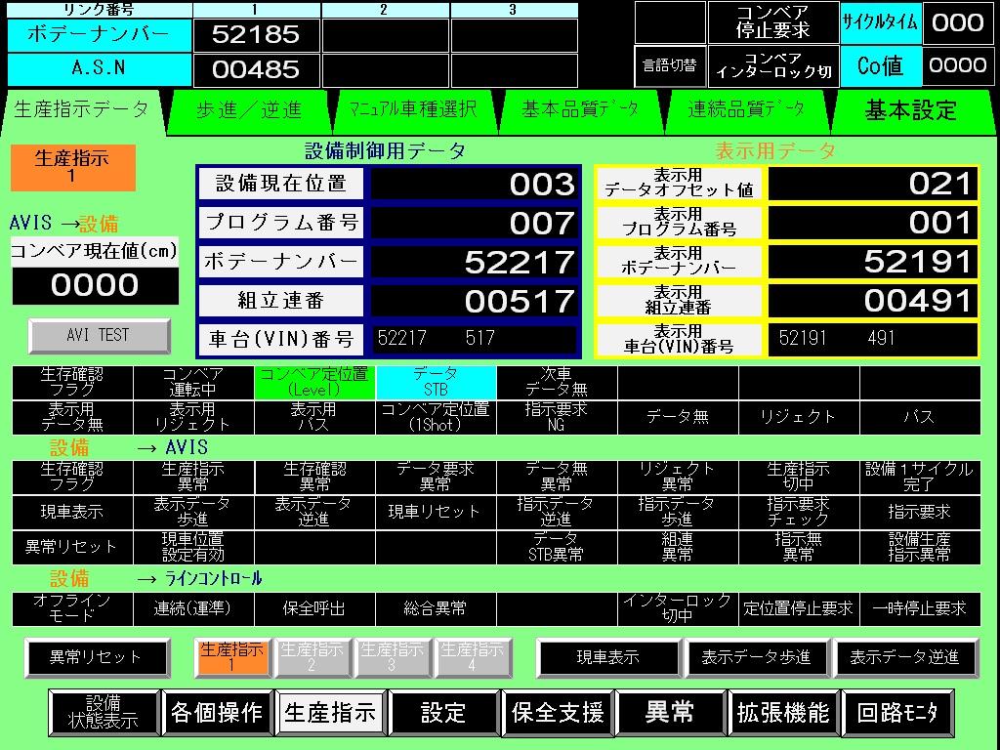
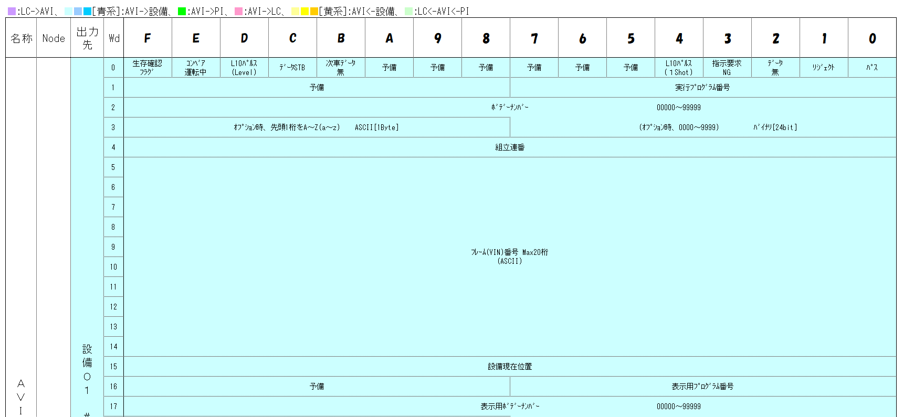
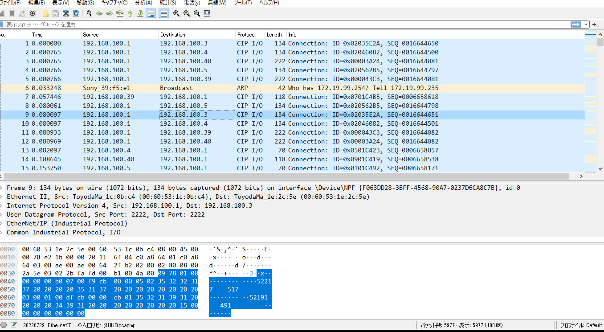
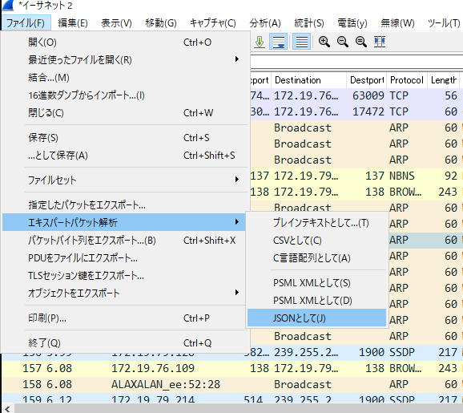
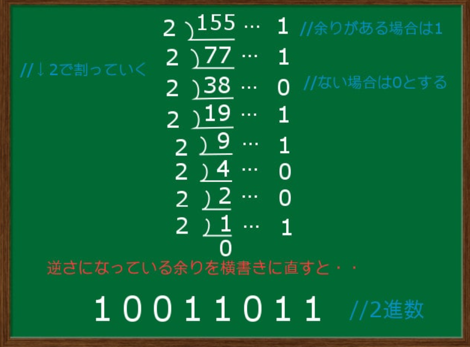
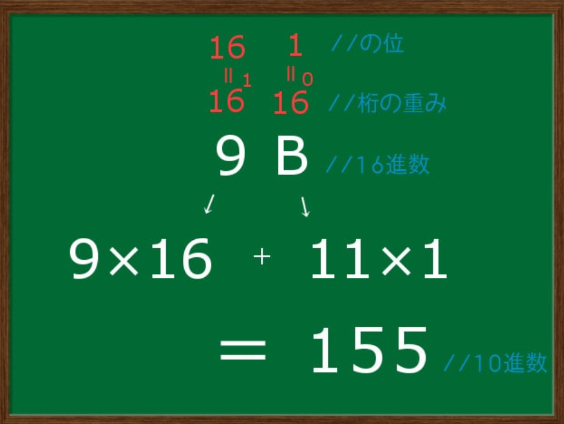

KOROMO Lightning Talk 紹介事例
目標：通信のみえる化ツール 作製 （保全ツールとして活用）
STEP1 ) 専門技能 A級研修ツール作成
ﾎﾟｲﾝﾄ① 通信解析ツールで取得したデータ活用 （現地現物）
ﾎﾟｲﾝﾄ② 生のデータから見てわかるデータに変換 （データのみえる化）
ﾎﾟｲﾝﾄ③ 未）新鮮なデータ活用 （ジャスト イン タイム）
専門技能研修 工場設備保全 組立）Ver.6
生産指示 通信の見えるか実習ツール
設備情報がどのようにデータ化され通信しているか修得
実習内容） ①通信データの取得 パケットキャプチャ実施
②生の通信データ ⇒ 設備情報データ変換
・生産指示ネットワーク

・設備生産指示ﾓﾆﾀｰ画面

通信データ構成
・アスキーコード 従来からの通信コード
・生産指示割付け表 AVI ⇒ 設備へのデータ割付け （32ワード）

《実習課題》
①通信データの取得
パケットキャプチャ実施 ⇒ ワイヤーシャーク使用
①-1 パケットキャプチャの仕掛け 必要な通信データが取得できる接続
①-2 ワイヤーシャーク キャプチャ開始
①-3 ワイヤーシャーク受信データ選択

①-4 ワイヤーシャーク ⇒ JSONデータに変換出力（ブラウザ上で確認する為）

①-5 実習アプリに取込
⇒ javascriptに読み込み("cipio.data"選択) 生産指示割付表に格納
| word |
-3 |
-2 |
-1 |
0 |
1 |
| index |
0 |
1 |
2 |
3 |
4 |
5 |
6 |
7 |
8 |
9 |
| data |
* |
* |
* |
* |
* |
* |
* |
* |
* |
* |
| word |
2 |
3 |
4 |
5 |
6 |
| index |
10 |
11 |
12 |
13 |
14 |
15 |
16 |
17 |
18 |
19 |
| data |
* |
* |
* |
* |
* |
* |
* |
* |
* |
* |
| word |
7 |
8 |
9 |
10 |
11 |
| index |
20 |
21 |
22 |
23 |
24 |
25 |
26 |
27 |
28 |
29 |
| data |
* |
* |
* |
* |
* |
* |
* |
* |
* |
* |
・index-6.7:設備情報【ON/OFF信号ビット出力】,
・Word-1:プログラム番号, Word-2:ボデーNo, Word-4:組立連番【バイナリー】,
・indx-16~ :フレーム(VIN)番号情報エリア【ASCIIコード】,
《実習課題》
②生の通信データから設備情報に変換 〈進数換算の復習〉
②-1 16進数表記 ⇒ ２進数表記（ビット変換）
●解答：index欄 灰色 のdata を ＊印に入力
１６進数 4bit 入力
変換
ﾋﾞｯﾄ変換 出力
□□□□
| ビット出力 |
1/2byte上位 |
| 8 |
4 |
2 |
1 |
| * |
* |
* |
* |
１６進数 4bit 入力
変換
ﾋﾞｯﾄ変換 出力
□□□□
| ビット出力 |
1/2byte下位 |
| 8 |
4 |
2 |
1 |
| * |
* |
* |
* |
・用途：設備情報(ON/OFF信号) = 生存確認フラグ/コンベア運転/コンベア定位置/データSTB/ etc.

【計算方法解説】!右クリック→検証/開発者ツール→コンソール画面で処理手順確認！
②-2 16進数表記 ⇒ 10進数表記（decimal変換）
●解答：word欄 水色 のdata を ＊印に入力
・用途：バイナリ10進表記出力 = ボデーNo/組立連番/プログラムNo/設備現在位置/コンベア値

②-3 アスキーコード ⇒ 文字列変換
●解答：index欄 桃色 のdata を ＊印に入力
・用途：アスキーコード = フレーム（VIN）番号（ボデーNo,組立連番 等）
まとめ：
元来パケットキャプチャの目的は、データのやり取りをみて、通信の状態を把握するものです
通信の制御方法をしっかり学んで良否判断出来る様にしましょう。
Thank You!!
We'll meet Agin.
2022年12月20日 元町総組立部専門技能係 Koji-Tani